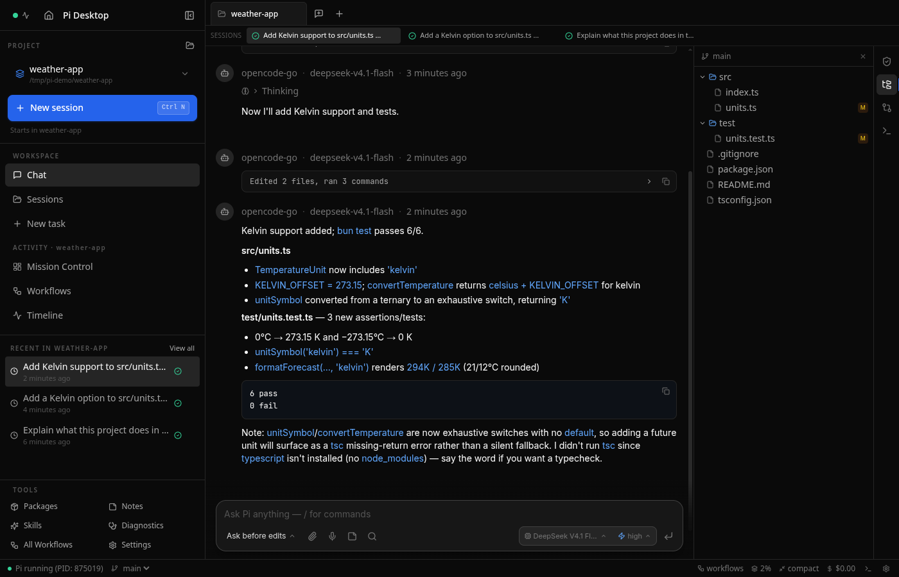
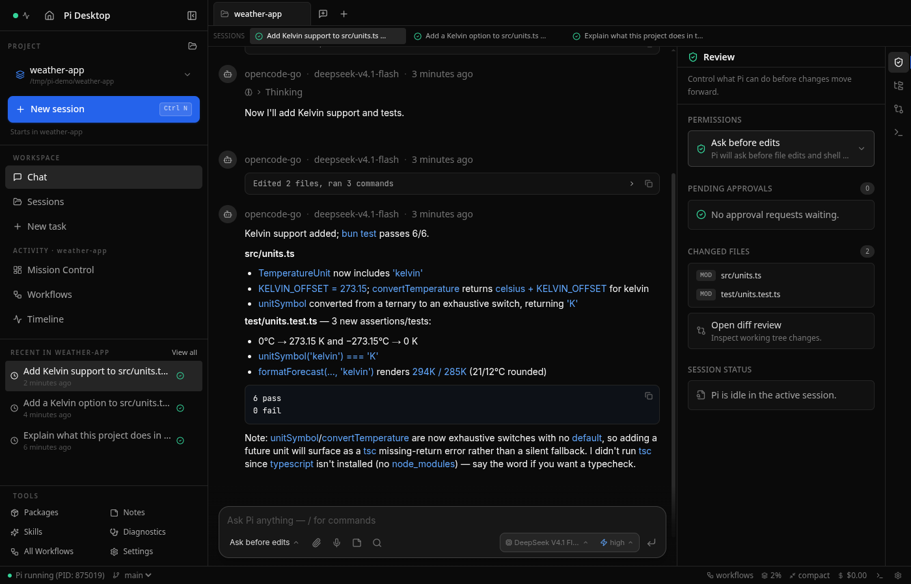
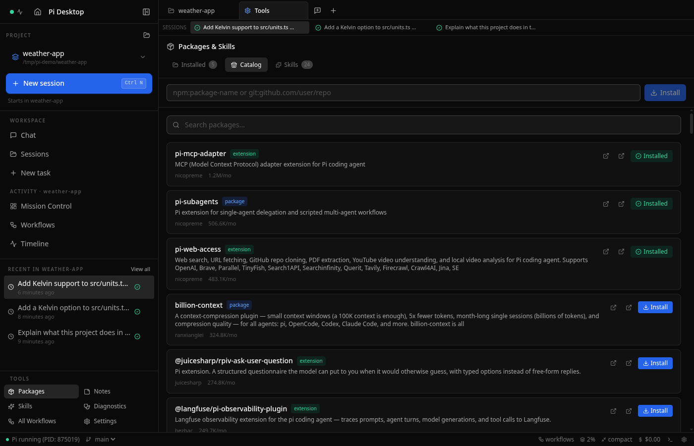
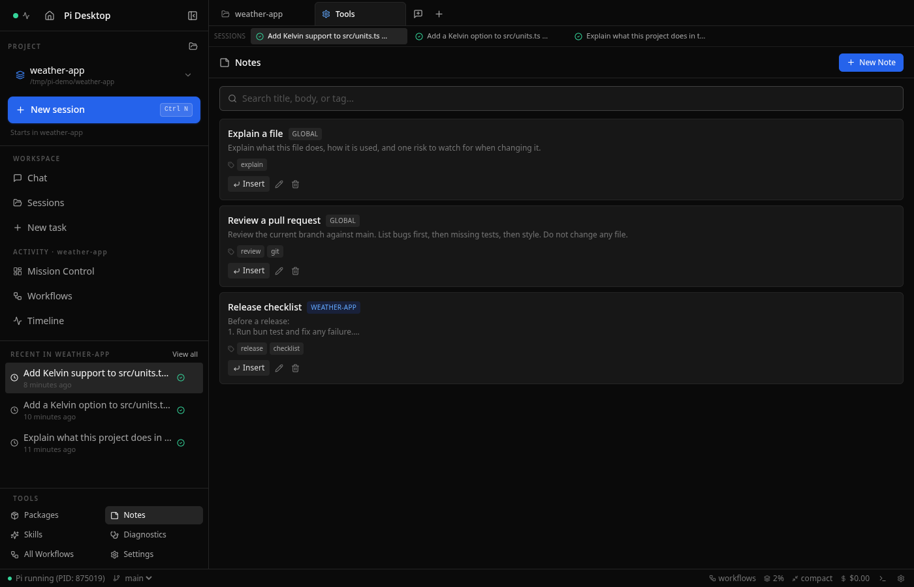
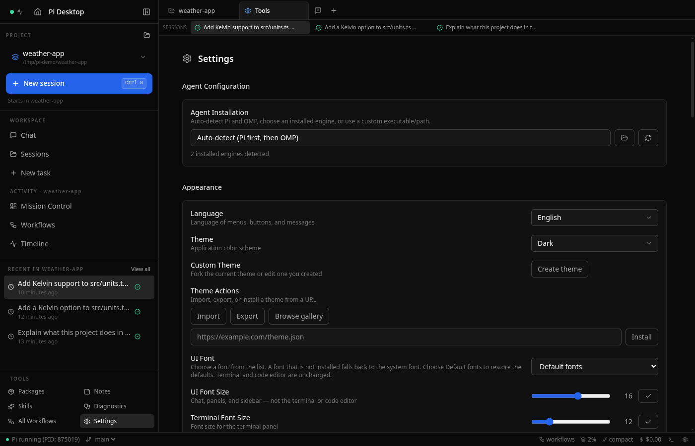

Chat, review changes, browse files, and run commands in one window. Works with the standard Pi CLI or oh-my-pi (omp). Free and open source.





What's inside
Streaming replies with thinking blocks and tool calls. Consecutive tool calls fold into groups, file reads show as line-numbered code, and edits show as diffs. File names in replies open a preview. Mention files with @, attach or drop files and images, recall earlier prompts with the arrow keys, and find text with Ctrl/Cmd+F.
Every live session runs its own agent process, so a turn keeps going after you switch away. Mission Control shows what is running in every project, and New Task starts work in a fresh background session, optionally in its own Git worktree. Drag project tabs to reorder them.
The Review panel shows changed files, the permission mode, and session status. Approve or deny tool calls without leaving the chat, and set allow/deny rules per tool, globally or per workspace.
Run the standard Pi CLI or the compatible omp binary from oh-my-pi. Each keeps its own sessions and the app reads both, so switching engines never hides your history. Opening a session starts the engine that wrote it.
Browse your project and preview code, images, PDFs, and HTML. Review the diff, then Commit, Commit + Push, or open a pull request from the same bar. Switch or create branches from the status bar.
Open and edit files in a CodeMirror 6 editor with syntax highlighting for 15+ languages and Git change markers in the gutter.
A full PTY terminal with ANSI colors, one per workspace. Drag its edge to resize it.
Browse and install Pi packages from pi.dev/packages. The Installed tab checks npm for newer versions and updates one package or all of them.
Dark, Light, System, Nord, Gruvbox, Breeze Dark, Breeze Light, and Breeze Claudius, or build your own from 7 seed colors with a live preview. System follows the OS and can map light and dark mode to any two installed themes. Import, export, install from a URL, or browse the community gallery in the app.
Pick a model from the keyboard or cycle models with Ctrl+P. Change the app shortcuts in Settings, and add your own models and providers.
Session names come from Pi, and you can rename a session in the sidebar. Tag sessions, archive them, or branch from a message.
Home shows usage stats for 7 days up to a year: messages, tokens, active-day streaks, peak hour, and a per-model breakdown. The stats stay after you delete a session.
Save your TypeSafe API key once and every new Pi or OMP session gets it. One click installs the official Jev skill for both engines. It stays off until you set it up, and Pi Desktop never calls TypeSafe itself.
Click the mic and talk. Your words show up in the prompt box while you speak, and recording stops after a short pause. Speech-to-text runs on your own machine, so nothing goes to a server. Pick a model in Settings (Moonshine for fast English, Whisper or Parakeet for more languages). No model ships with the app; one downloads only when you choose it.
Get started
Pi Desktop wraps the Pi coding agent. Install it first:
npm install -g @earendil-works/pi-coding-agent
Grab the latest build for your platform from Releases: Linux AppImage, macOS DMG (Apple Silicon), or Windows installer/portable.
chmod +x Pi-Desktop-*.AppImage
./Pi-Desktop-*.AppImage
macOS and Windows builds are unsigned. See the README for the one-time Gatekeeper/SmartScreen steps, or build from source to skip them.